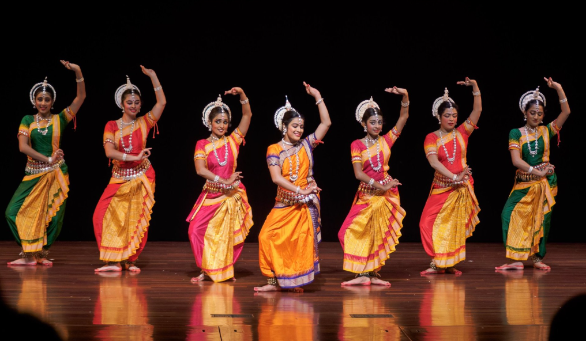
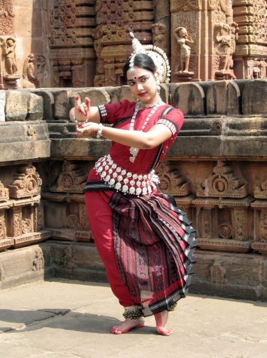
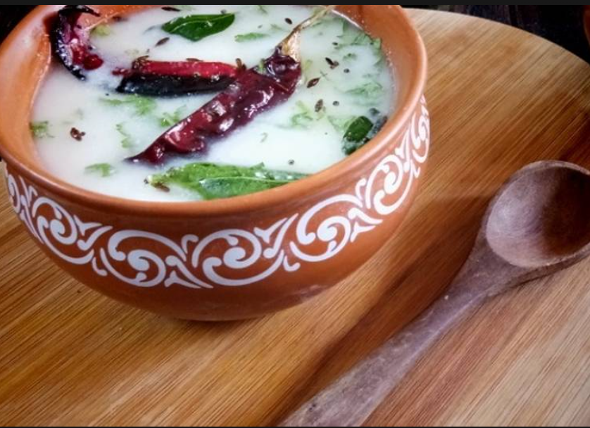
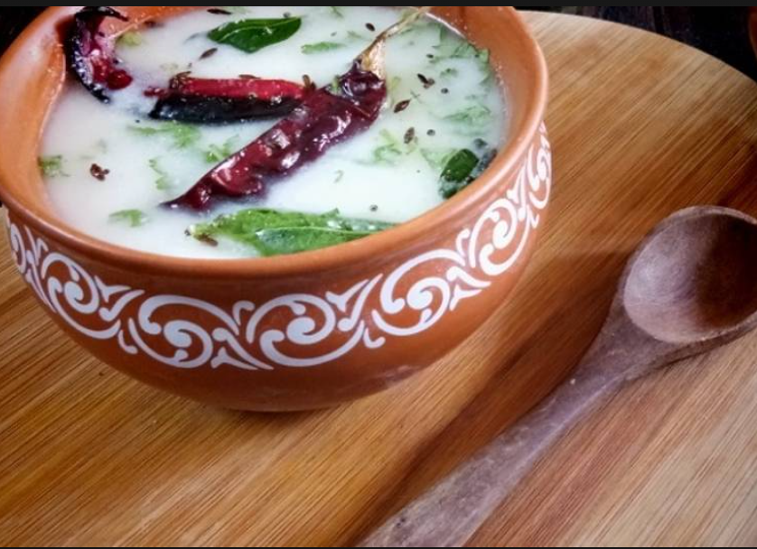

Cultural Highlights
Experience the vibrant Odissi dance and Sand Art festivals.
Odissi Dance


Sand Art


Learn about the rich history and heritage of the city through its art and traditions.
Food
Relish delicious local dishes like Rasgolla, Dalma, Pakhala Bhata, Chhena Poda, and Dahi Bara Aloo Dum.
Traditional Dishes
 
